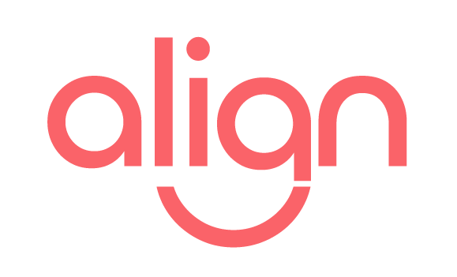

La plataforma con inteligencia artificial que transforma la gestion de reuniones escolares en seguimiento real.
Conocer masEn cada escuela se hacen decenas de reuniones por semana. Pero sin un sistema, los acuerdos se pierden, los pendientes se olvidan y nadie recuerda quien se comprometio a que.
Archivos sueltos que nadie vuelve a abrir. Sin estructura, sin busqueda, sin continuidad entre reuniones.
"Quedamos en algo la vez pasada..." pero nadie recuerda exactamente que, ni quien era responsable.
El equipo directivo pierde tiempo valioso armando actas, enviando recordatorios y verificando cumplimientos.
Agrupa reuniones relacionadas en hilos tematicos. Cada hilo tiene su historial, sus pendientes y sus contactos.
Cada compromiso tiene un responsable asignado, fecha y estado. Nada se pierde.
Registra reuniones escribiendo, dictando por voz o subiendo un archivo. La IA hace el resto.
Envia automaticamente los pendientes y preguntas a los participantes con un click.
Escribe, dicta o subi un archivo con las notas de la reunion. Sin formato rigido.
Claude identifica compromisos, genera preguntas de seguimiento y resume lo tratado.
Asigna responsables, vincula a un hilo de seguimiento y agenda la proxima reunion.
Marca pendientes como resueltos, envia recordatorios y consulta el historial cuando quieras.
No es un chatbot generico. La IA esta entrenada para entender reuniones escolares y generar seguimiento accionable.
Genera un resumen claro y conciso de cada reunion, destacando los puntos clave tratados.
Identifica automaticamente los acuerdos y los convierte en acciones con texto claro y asignable.
Sugiere preguntas clave para la proxima reunion basandose en lo que se discutio.
Categoriza automaticamente cada reunion: pedagogico, disciplinario, familiar, institucional, curricular o administrativo.
Cuatro tipos de reunion que cubren toda la actividad institucional del equipo directivo.
Plenarias, por departamento, por grado. Seguimiento de acuerdos pedagogicos y curriculares entre todo el equipo.
Entrevistas individuales o grupales. Registro del dialogo con las familias y compromisos mutuos.
Seguimiento personalizado con docentes, coordinadores o personal. Acompanamiento profesional documentado.
Equipo directivo, consejo escolar. Decisiones estrategicas e institucionales con trazabilidad completa.
La IA resume, clasifica y organiza. El equipo directivo se enfoca en lo pedagogico, no en el papeleo.
Cada compromiso queda registrado con responsable, estado y fecha. Se puede consultar en cualquier momento.
Los hilos de seguimiento conectan reuniones pasadas con las futuras. Nada queda suelto entre encuentros.
Cada accion tiene un responsable visible. Los pendientes no se olvidan, se gestionan.
Estadisticas por tipo de reunion, por mes, por tema. El equipo directivo tiene visibilidad total.
Toda la informacion queda segura y accesible. Ideal para auditorias, supervisiones o cambios de gestion.
Los datos de tu institucion estan protegidos con los mismos estandares que usan bancos y hospitales.
Login seguro con cuentas institucionales de Google. Sin contrasenas adicionales.
Cada institucion tiene su espacio privado. Los datos nunca se mezclan entre escuelas.
Director, vicedirector, coordinador, docente. Cada rol ve y hace solo lo que corresponde.
Hospedado en Supabase (AWS) con backups automaticos y encriptacion en transito y en reposo.
Potenciado por Anthropic (Claude), lider mundial en seguridad de IA. Los datos no se usan para entrenamiento.
Registro de toda la actividad con timestamps. Ideal para supervisiones y acreditaciones.
Proba Align gratis durante 30 dias. Sin tarjeta de credito. Sin compromiso.
FrameOps · Soluciones
contacto@frameops.com